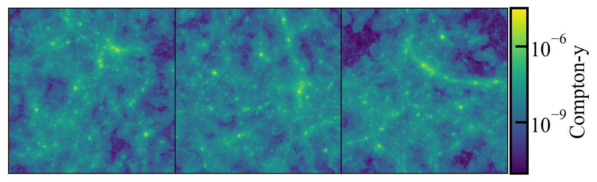

Pre-Made Data Products¶
The RAFIKI-CGM data products consist of:
Maps of the Compton-y parameter projected along the x, y, and z simulation box axis.
Selected particle data around the 500 most massive galaxies
Galaxy catalogs containing galaxy and halo properties.
Compton-y Maps¶
For each simulation snapshot, a 2D map of the Compton-y parameter is generated. The maps are generated using yt’s fixed resolution buffer
(FRB) functionality, such that each pixel has a width corresponding to 3 arcseconds at the redshift of the snapshot. (If you generate your own
map, be sure to update sz.pixel_size_arcsec in the configuration file). If galaxies are desired to be simulated at a range of redshifts (see Generating a Mock Galaxy Catalog) this scale will be adjusted internally in the pipeline prior to convolving with a Gaussian beam.
{kind=link}

Compton-y maps that come with RAFIKI-CGM. Here we see the RAFIKI-A simulation at z=1, projected in the x (left), y (center), and z (right) directions. To generate data products, stamps will be cut out of these maps around galaxies in the identified sample and stacked to generate a range of data products.¶
Particle Data¶
Generating mock X-ray observations depends strongly on instrument sensitivites, exposure time, and redshift. Therefore instead of providing pre-generated maps of X-ray emission, the pre-made data product for the X-ray pipeline works off of hdf5 files containing particle data around the 500 most massive galaxies in each simulation box. This generally corresponds to a lower stellar mass limit of \(4.2 \times 10^{10} M_\odot\). To save storage space, these particle files only contain the information needed for X-ray simulation, namely positions, velocities, density, temperature, metallicity, emission measure, mass, and smoothing length. These are saved as yt datasets that can then be reloaded into pyXSIM to generate and project mock photons.
Note
Future releases will expand particle sets to lower stellar mass.
Galaxy Catalogs¶
Galaxy catalogs are saved as hdf5 files in the main directory for each simulation.
File structure:
galaxy_catalog.hdf5.hdf
├── metadata/
│ ├── simulation
│ └── redshift
│
├── galaxy_properties/
│ ├── stellar_mass
│ ├── dm_mass
│ ├── m200c
│ ├── r200c
│ ├── m500c
│ ├── r500c
│ ├── age
│ ├── sfr
│ └── central
│
├── physical_locations/
│ ├── x
│ ├── y
│ └── z
│
└──frb_locations/
├── x
├── y
└── z
A variety of halo properties are saved to allow for the consideration of different methods of determining halo mass.
FRB locations refer to the pixel locations of the pre-made Compton-y parameter maps (see Compton-y Maps)